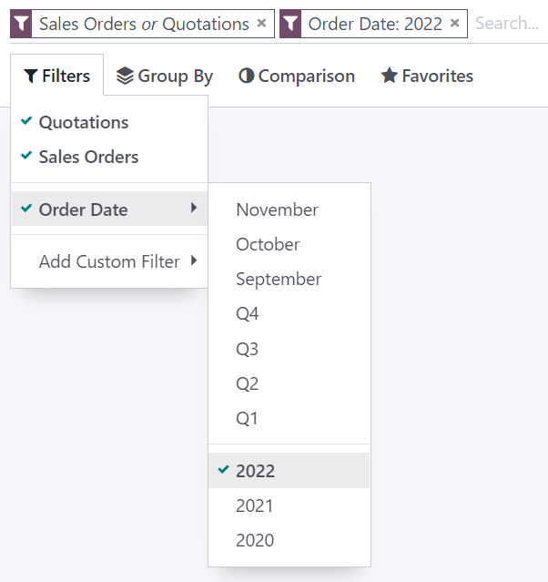

Search and filter records¶
Odoo uses filters to include only the most relevant records depending on the purpose of the view you are on. However, you can edit the default filter or search for specific values.
Preconfigured filters¶
You can modify the default selection of records by clicking Filters and selecting one or several preconfigured filters.
Example
On the Sales Analysis report, only records at the sales order stage are selected by default. However, you could also include records at the quotation stage by selecting Quotations. Furthermore, you could only include records from a specific year, for example 2022, by selecting .
Note
If you select preconfigured filters from the same group (i.e., that are not separated by an horizontal line), the records can match any condition to be included. However, if you select filters from different groups, the records have to match all condition to be included.
Custom filters¶
You can create custom filters using most fields present on the model by clicking , selecting a field, an operator, a value, and clicking Apply.
Example
You could only include records from a single salesperson on the Sales Analysis report, for
example Mitchell Admin, by selecting Salesperson as the field, is equal
to as the operator, and typing Mitchell Admin as the value.

Note
If the records should only match one of several conditions, click Add a condition before applying a custom filter. If the records should match all conditions, add new custom filters instead.
Search for values¶
You can use the search field to quickly look for specific values and add them as a filter. Either type the full value you are searching for and select the desired field, or type a part of the value, click the dropdown button (⏵) before the chosen field, and select the exact value you are looking for.
Example
Instead of adding a custom filter to select records where Mitchell Admin is the salesperson on
the Sales Analysis report, you could search for Mitch, click the dropdown button
(⏵) next to Search Salesperson for: Mitch, and select
Mitchell Admin.

Note
Using the search field is equivalent to using the contains operator when adding a custom filter. If you enter a partial value and directly select the desired field, all records containing the characters you typed for the selected field will be included.
Group records¶
You can click Group By below the search field to cluster records together according to one of the preconfigured groups.
Example
You could group the records by salesperson on the Sales Analysis report by clicking Group By and selecting Salesperson. No records are filtered out.

You can customize groups by using a wide selection of fields present on the model. To do so, click , select a field, and click Apply.
Note
You can use several groups at the same time. The first group you select is the main cluster, the next one you add further divides the main group’s categories, and so on.